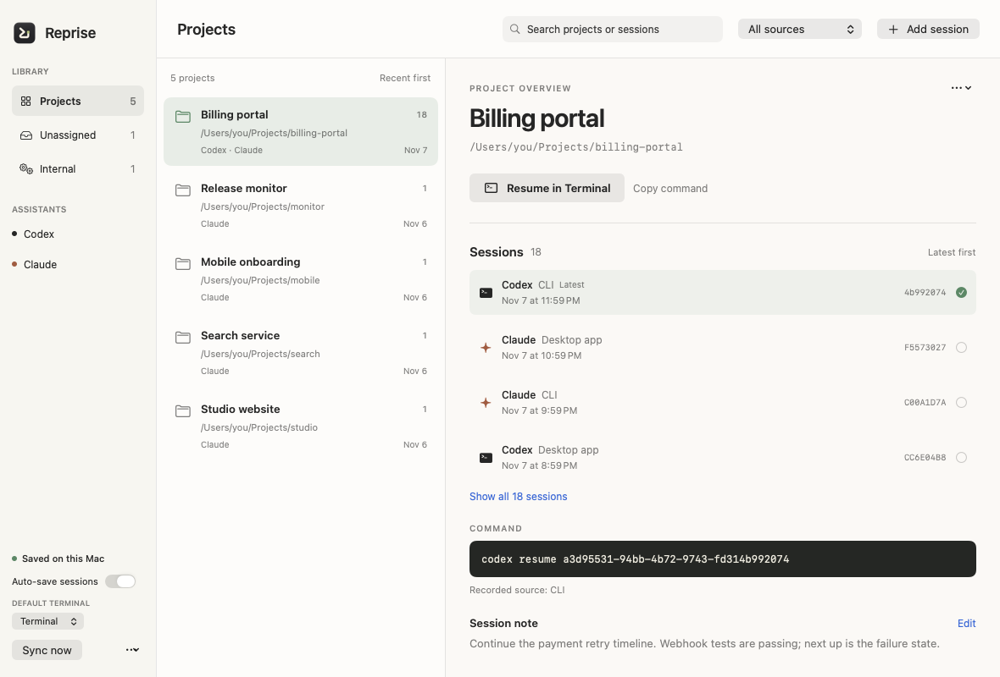

It remembers
the sessions.
Local Codex and Claude sessions appear automatically while Reprise runs. Add a screenshot or paste a command for anything else.
A small Mac app for unfinished work
Codex in one terminal. Claude in another. Reprise keeps their sessions together by project, ready for your next good idea.
One project. All of its sessions.

An actual app view with example projects. Your conversations stay on your Mac.
Local Codex and Claude sessions appear automatically while Reprise runs. Add a screenshot or paste a command for anything else.
One directory gets one place in your library, even across assistants. Previous sessions live inside the project, newest first.
Choose Ghostty, Terminal, or iTerm2 as your default, then resume in the project folder. Your full command and a note about where you left off are right beside it.
LOCAL IS THE WHOLE POINT
Session discovery reads local metadata. Screenshot recognition uses Apple Vision on your device. Reprise has no cloud account or telemetry service.
Yes. Session history labels the recorded source, and the All sources menu filters Desktop app, CLI, IDE extension, SDK / automation, Multiple clients, or Unknown. Codex and Claude local coding sessions are detected from their metadata. Missing or ambiguous records stay Unknown; you can correct them in Session details. Regular cloud-only Claude chats are not imported. Resume still uses your chosen terminal.
A CLI creates separate conversations as you work. Reprise keeps every session but groups matching project directories into one row. Open the project to choose a recent or older session.
Assign a project directory when saving a capture. Older captures without a directory live under Unassigned until you choose their folder. The filename doesn’t become a project in your main library.
macOS 14 or later, the relevant CLI installed and signed in, and a project folder that still exists. On first use, macOS may ask to let Reprise control your selected terminal. Choose your default in the library sidebar; Ghostty requires version 1.3 or newer.
It disappears from Reprise, but the original CLI conversation stays on disk. Removed local sessions can be restored from the library menu.
Download the DMG, open it, and drag Reprise into Applications. Quit any older copy before replacing it. This community release is ad-hoc signed rather than Apple notarized; if macOS blocks it, review the app under System Settings → Privacy & Security.